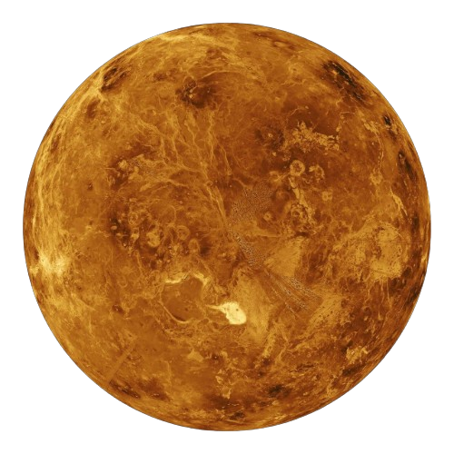
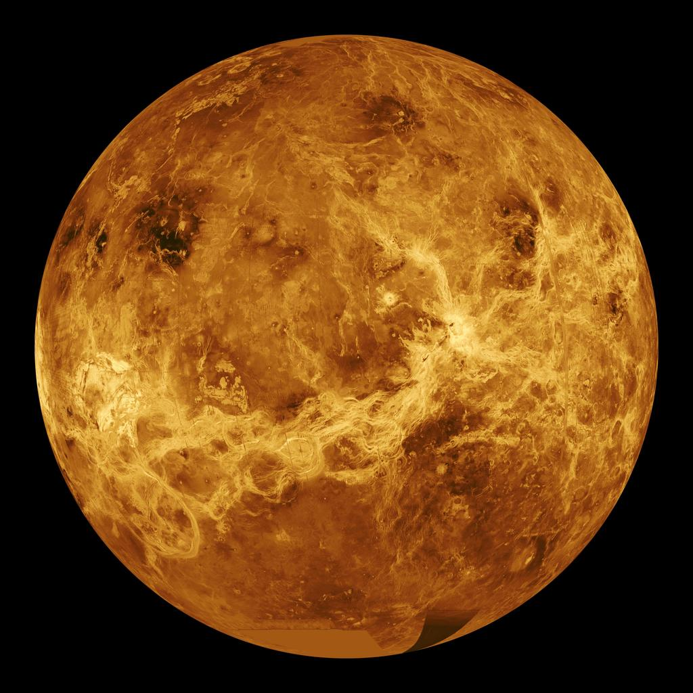
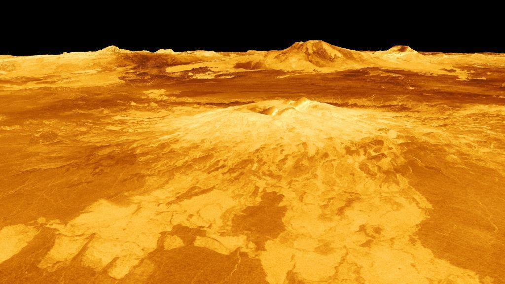
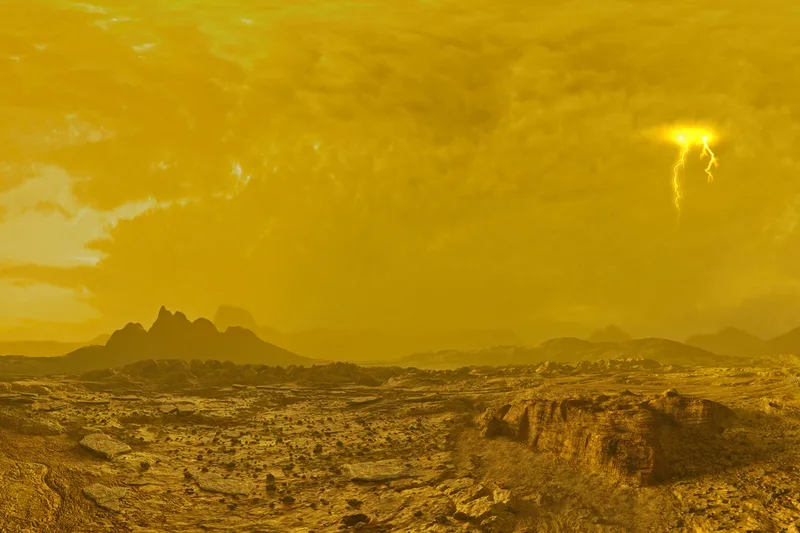

Venus is the second planet from the Sun and Earth's closest planetary neighbor. Often called Earth's "twin" because of its similar size and mass, Venus is actually the hottest planet in the Solar System due to its dense carbon dioxide atmosphere and powerful greenhouse effect. Thick clouds of sulfuric acid permanently hide its volcanic surface from visible light.

Nearly the same size as Earth, making Venus Earth's closest planetary twin.
The hottest planetary surface in the Solar System.
Venus completes one orbit around the Sun in approximately 225 Earth days.
Venus has no natural satellites or ring system.
Venus is the second planet from the Sun and the closest planetary neighbor to Earth. Although often called Earth's "sister planet" because of its similar size, mass, and composition, Venus evolved into one of the most extreme environments in the Solar System. A dense atmosphere rich in carbon dioxide traps enormous amounts of heat through a runaway greenhouse effect, producing surface temperatures hot enough to melt lead.
Venus possesses the densest atmosphere of any rocky planet. Carbon dioxide makes up nearly 96.5% of the atmosphere, while thick clouds of sulfuric acid permanently hide the planet's surface from visible light. Atmospheric pressure at the surface is about ninety-two times greater than Earth's.
Carbon dioxide dominates the Venusian atmosphere.
Standing on Venus would feel similar to being nearly one kilometer beneath Earth's oceans.
Clouds consist primarily of sulfuric acid droplets.
Powerful upper-atmosphere winds circle the planet in only a few days.
Venus is the hottest planet in the Solar System—not Mercury—because its thick carbon dioxide atmosphere traps heat extremely efficiently. Sunlight enters the atmosphere, warms the surface, and the escaping infrared radiation becomes trapped, creating an extreme greenhouse effect.
Average temperatures remain close to 465°C across almost the entire planet.
Dense carbon dioxide absorbs outgoing heat, preventing the planet from cooling efficiently.
Venus provides scientists with an important example of how greenhouse gases can dramatically affect planetary climates.
Like Earth, Venus is believed to contain a metallic iron core surrounded by a rocky mantle and crust. However, unlike Earth, Venus shows no evidence of active plate tectonics.
Scientists believe Venus contains a large metallic core similar to Earth's.
The mantle likely drives volcanic activity through slow convection.
Large volcanic plains cover much of the planet's surface.
Venus lacks Earth's modern system of moving tectonic plates.
Radar observations reveal a world dominated by volcanic plains, lava flows, mountains, impact craters, and giant shield volcanoes. Venus may still be volcanically active today.
The highest mountain range on Venus rises approximately 11 kilometers above the surrounding plains.
One of the tallest volcanoes on Venus and a strong candidate for recent volcanic activity.
Extensive lava flows have resurfaced much of Venus over hundreds of millions of years.
Unlike Earth, Venus does not possess a strong global magnetic field generated by an active internal dynamo. Instead, the planet has an induced magnetosphere created when the solar wind interacts with its upper atmosphere. This leaves the atmosphere more exposed to charged particles from the Sun and has likely contributed to the gradual loss of water over billions of years.
Venus lacks a powerful internally generated magnetic field like Earth's.
The solar wind compresses Venus' upper atmosphere and creates a temporary magnetic shield.
Without a strong magnetic field, hydrogen and oxygen atoms can gradually escape into space.
Venus has been explored by numerous spacecraft from the Soviet Union, NASA, ESA, and JAXA. These missions have transformed our understanding of the planet's atmosphere, geology, climate, and volcanic history.
The Soviet Venera missions achieved the first successful landings on another planet and returned the first photographs from the surface of Venus.
NASA's Magellan spacecraft mapped almost the entire Venusian surface using radar, revealing volcanoes, mountains, and lava plains.
ESA studied the atmosphere, weather systems, and atmospheric escape processes around Venus.
Japan's Akatsuki spacecraft continues observing Venus' clouds, weather patterns, and atmospheric circulation.
Mariner 2 became the first spacecraft to successfully fly past another planet, collecting valuable data about Venus.
Venera 7 became the first spacecraft to successfully land on another planet and transmit data from the surface.
Venera 13 returned the first color photographs from the surface of Venus.
Magellan entered orbit and produced the highest-resolution radar maps of Venus ever created.
ESA's Venus Express began a detailed investigation of the atmosphere and climate.
JAXA's Akatsuki successfully entered orbit after an earlier failed attempt, beginning long-term atmospheric observations.
Venus is hotter than Mercury even though Mercury is closer to the Sun.
Venus rotates in the opposite direction of most planets in the Solar System.
Its clouds are made primarily of sulfuric acid droplets.
One day on Venus lasts longer than one Venusian year.
Scientists have identified thousands of volcanic structures across the planet.
Venus is very similar to Earth in size, mass, and density, but evolved into an entirely different world.
Venus provides scientists with a natural laboratory for studying climate evolution, greenhouse effects, volcanic activity, atmospheric circulation, and planetary evolution. By comparing Venus with Earth, researchers gain valuable insight into how small differences in planetary conditions can lead to dramatically different environments.
Venus demonstrates the long-term effects of an extreme greenhouse atmosphere.
Studying Venus helps scientists understand why Earth remained habitable while Venus became hostile.
Many rocky exoplanets discovered around other stars may resemble Venus more closely than Earth.
Upcoming spacecraft will investigate Venus' atmosphere, geology, and possible ongoing volcanic activity.
Venus is one of the most scientifically important planets in the Solar System. Although it shares many similarities with Earth in size, density, and composition, it evolved into an extremely hostile world with crushing atmospheric pressure, scorching temperatures, and acidic clouds. Understanding why Venus and Earth followed dramatically different evolutionary paths helps scientists better understand planetary climates, atmospheric evolution, and the future of rocky planets.
Venus likely possessed large amounts of water billions of years ago. As the young Sun became brighter, increasing temperatures caused oceans to evaporate. Water vapor, itself a greenhouse gas, trapped even more heat. Eventually, ultraviolet radiation split water molecules into hydrogen and oxygen, allowing the lightweight hydrogen to escape into space. Over time, Venus transformed into the dry, overheated world we observe today.
Radar observations from NASA's Magellan mission revealed enormous volcanic plains, giant shield volcanoes, extensive lava flows, and mountain ranges hidden beneath thick clouds. Some recent observations even suggest that volcanic eruptions may still be occurring today, indicating that Venus could remain geologically active.
Scientists also study Venus to understand rocky exoplanets discovered around distant stars. Many Earth-sized exoplanets orbit close to their stars and may resemble Venus more closely than Earth. Research on Venus therefore provides valuable insight into the evolution of terrestrial worlds throughout the Milky Way Galaxy.
Images inspired by spacecraft observations and scientific visualization.

A global ultraviolet view of Venus highlighting its dense cloud layers.

Radar imagery reveals enormous volcanic plains hidden beneath the clouds.

Thick sulfuric acid clouds completely cover the planet.
Venus has a thick carbon dioxide atmosphere that traps heat through a powerful greenhouse effect, making it hotter than Mercury despite being farther from the Sun.
No. The extremely high temperatures, crushing atmospheric pressure, and acidic clouds make the surface uninhabitable with current technology.
No. Venus has no known natural satellites or ring system.
Scientists are still investigating the cause. One possibility is that a massive collision early in the planet's history altered its rotation.